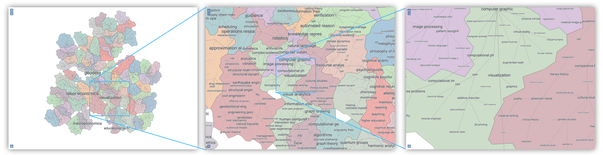

Multi-level tree based approach for interactive graph visualization with semantic zoom [paper] [code]
This web page gives examples for the paper "Multi-level tree based approach for interactive graph visualization with semantic zoom".
Example with Google Topics Graph
The Google Topics Graph (Paper Here) captures relations between research topics. The graph was extracted from Google Scholar academic research profiles and this version contains 5,947 nodes. The nodes of the graph are research topics, with weights corresponding to the number of people reporting to work on them. Edges are placed between pairs of topics that co-occur in the profiles.


Examples with Last.fm graph
The LastFM Graph (Paper Here) shows relations between musical artists and contains 2588 nodes. This graph, is based on data from a 2009 web crawl of the last.fm website, an Internet radio and music community website with a recommender system based on user listening habits. The nodes are popular musical artists with weights corresponding to the number of listeners. Edges are placed between pairs of similar artists, based on listening habits.